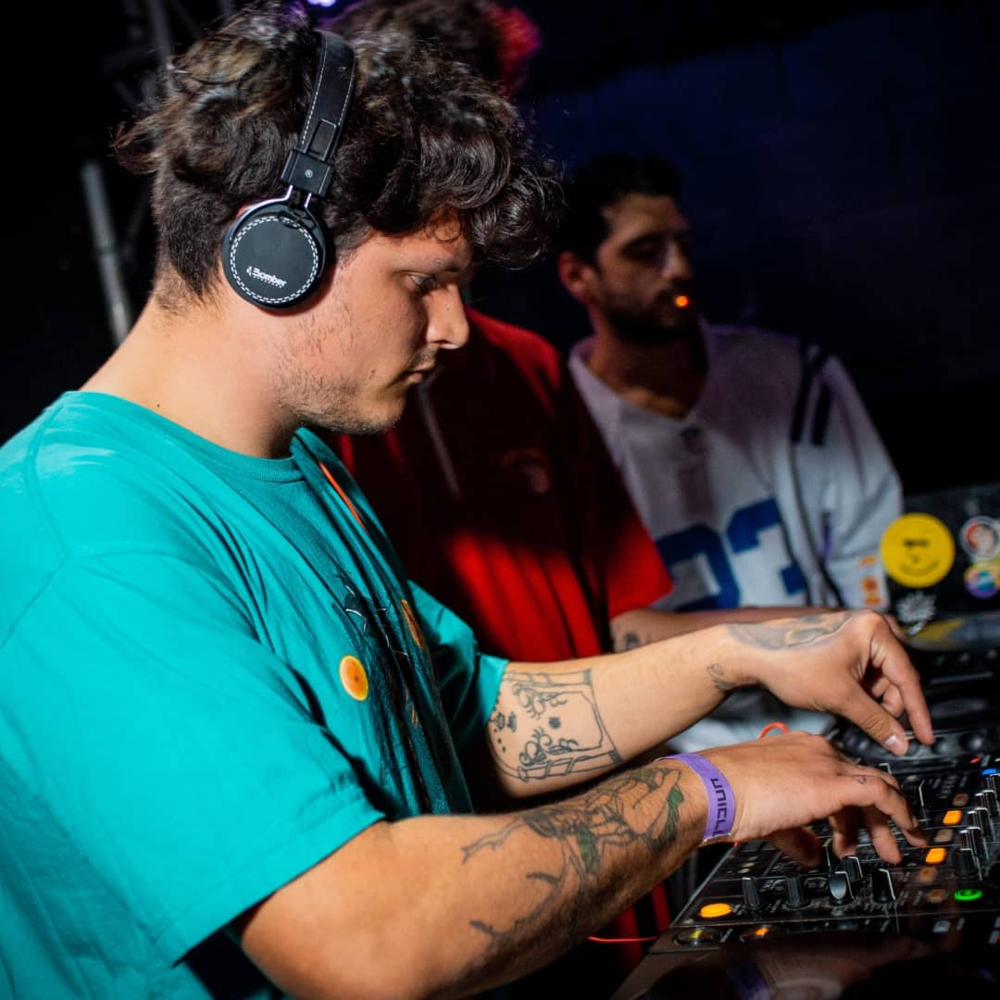

¿Pero... QUIEN es POISONOUZ?
Poisonouz es un artista productor/dj de Ituzaingó, Buenos Aires.
"Su fanatismo por los videojuegos y la cultura medieval son los que se ven reflejados en cada una de sus canciones"
Inspirado también en artistas de leyenda como Bloodthinnerz e Infekt, entre otros.
Su trayectoria por las fiestas de Buenos Aires va desde DirtyBass, Cochinero manija, Wave, Kepler y otras.
Creador y fundador de la reconocida crew de productores argentinos PepsiGang
"El SAVANT del Riddim"
